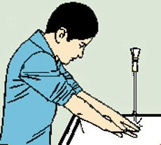
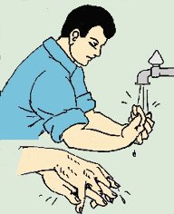
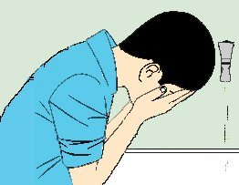
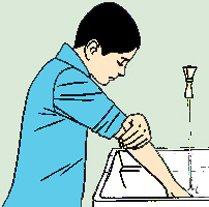
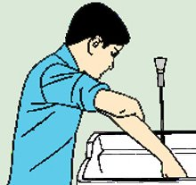
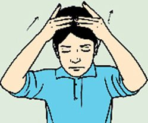
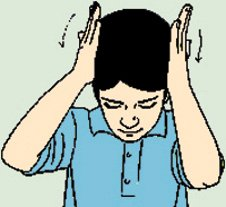
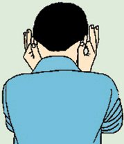
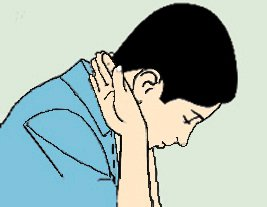
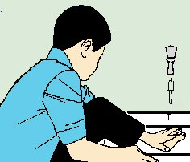

RESÝMLERLE NAMAZ ABDESTÝNÝN ALINIÞI
1- Abdest
almaya hazýr hâle gelinir. Bunun için önce kollar dirseklerin yukarýsýna
kadar sývanýr; çoraplar çýkartýlýp paçalar sývanýr, sonra, “Niyet ettim Allah
rýzâsý için abdest almaya” diye niyet edilir ve Eûzü Besmele çekilir. Yâni,“Eûzü
billâhi mineþþeytânirracîm, Bismillâhirrahmânirrahîm” denir.

2- Eller
bileklere kadar üç kere yýkanýr. Parmak aralarýnýn yýkanmasýna dikkat edilir.
Parmaklarda yüzük varsa oynatýlýp altýnýn yýkanmasý saðlanýr.

3- Aðýz
ve burun yýkanýr. Bunun için sað avuç ile aðza üç kere ayrý ayrý su alýnýp
her defasýnda iyice çalkalanýr. Sonra, sað avuç ile buruna üç kere ayrý ayrý
su çekilir ve sol el ile sümkürülerek burun temizlenir.
4- Yüz
yýkanýr. Alýnda saç bittiði yerden itibaren kulaklarýn yumuþaðýna ve
çene altýna kadar yüzün her tarafý üç kere yýkanýr.

5- Kollar
yýkanýr. Önce sað kol dirseklerle beraber üç kere yýkanýr. Yýkarken kolun
her tarafý, kuru bir yer kalmayacak þekilde iyice ovulur. Sonra sol kol dirseklerle
beraber üç kere yýkanýr. Yýkarken kolun her tarafý, kuru bir yer kalmayacak
þekilde iyice ovulur. Musluk az açýlýrsa, israf olmaz.


6- Baþ
mesh edilir. Sað el yeni bir su ile ýslatýldýktan sonra elin içi ve parmaklar
baþýn üzerine konularak bir kere meshedilir. Eller ýslatýlarak sað elin þehâdet
veya küçük parmaðý ile sað kulaðýn içi, baþ parmaðý ile de kulaðýn dýþý; sol
elin þehâdet veya küçük parmaðý ile sol kulaðýn içi, baþ parmaðý ile de kulaðýn
arkasý meshedilir. Kalan üç parmaðýn dýþý ile de boynun arkasý meshedilir.
Baþýn dörtte birini meshetmekle farz yerine gelir, abdest sahîh olur. Ancak, kaplama mesh sünnet olduðu için, kaplama mesh yapýlýrsa sünnet sevâbý da alýnmýþ olur.
Bunun için þu þekilde
yapýlýrsa kaplama mesh yapýlmýþ olur: Önce iki el ýslatýlýp, iki elde de, üç
bitiþik ince parmak birbirine yapýþtýrýlýp, iç taraflarý, baþýn önünde, saçlarýn
baþlangýcýna konmak üzere iki el baþa konur. Ýki elin bu üç parmaðýnýn uçlarý,
birbirine dokunmalýdýr. Baþ ve þehâdet parmaklarý ve avuç içleri havada olup,
baþa dokunmaz. Ýki el, arkaya doðru çekilerek, üçer parmak, baþý mesh eder.
Eller, arkadaki saç kenarýna gidince, üçer parmak, baþtan ayrýlýp, iki elin
avuç içleri, kafanýn yan tarafýndaki saçlar üzerine yapýþtýrýlýp, arkadan öne
çekilerek, baþýn yan taraflarý da meshedilir. Sonra þehâdet parmaklarý kulaklarýn
iç tarafýna ve baþ parmaklarýn iç yüzü, kulak arkasýna konup, kulaklar yukarýdan
aþaðý meshedilir. Sonra, diðer üç parmaklarýn dýþ yüzleri enseye konup, ensenin
ortasýndan, iki tarafýna doðru çekilerek meshedilir.




7- Ayaklar yýkanýr. Sað ayak üç kere topuklarla beraber yýkanýr. Yýkamaya parmak uçlarýndan baþlanýr ve parmak aralarý hilâllenerek iyice temizlenir. Hilâlleme, sol elin küçük parmaðý ile sað ayaðýn küçük parmaðýndan baþlanýp diðer parmak aralarýna sokulup temizlenerek yapýlýr.
Sol ayak da üç
kere topuklarla beraber yýkanýr. Yýkamaya parmak uçlarýndan baþlanýr ve parmak
aralarý sað ayakta olduðu gibi hilâllanarak iyice temizlenir.

Abdestte her uzvu yýkarken abdest duâlarýný bilmeyen “Kelime-i þehâdet” okur.
(Abdest ile ilgili geniþ bilgi için, "Namazýn dýþýndaki þartlar" bölümüne bakýlmasýný tavsiye ederiz)
Not: Sadece abdest uzuvlarýný yâni yüz, kollar ve ayaklar yýkanýp, baþ meshedilirse bir kere yýkamakla da abdest alýnmýþ olur. Meselâ, vakit çok az olduðu zamanlarda böyle yapýlabilir. Ancak normal zamanlarda yukarýda târif edildiði þekilde sünnete uygun alýnýrsa, sünnet sevâbý da alýnmýþ olur. Çok iyi olur.